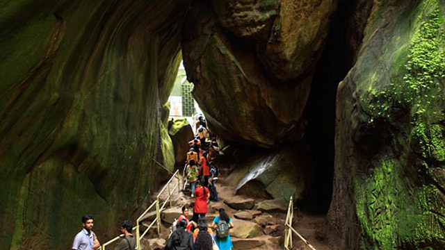

Uncover the Rich History of Kerala
Explore Kerala's ancient forts, palaces, and historical landmarks that tell tales of its glorious past.
Bekal Fort
Bekal Fort, located in Kasaragod, is the largest fort in Kerala, offering panoramic views of the Arabian Sea. Built in the 17th century, it served as a strategic coastal defense structure. The fort's massive walls, underground tunnels, and watchtowers reflect its historical significance. Today, it is a popular tourist destination, providing a glimpse into Kerala's maritime history while also serving as a serene picnic spot.


Mattancherry Palace
Also known as the Dutch Palace, the Mattancherry Palace in Kochi is a fine example of Kerala's architectural blend of traditional and European styles. Built by the Portuguese in 1555 and later renovated by the Dutch, the palace features exquisite murals depicting scenes from Hindu epics, as well as artifacts showcasing the royal lifestyle of the Kochi rulers. It stands as a testament to Kerala's colonial and cultural history.
Thalassery Heritage
Thalassery, often called the "Gateway of Malabar," is steeped in history. It was a prominent trading center for spices and the birthplace of cricket in India. Historic landmarks like the Thalassery Fort, built by the British in 1708, and ancient mosques and churches reflect the town's colonial legacy and cultural diversity. Thalassery also offers a glimpse into Kerala's historic spice trade and its significance on the global stage.


Edakkal Caves
Located in Wayanad, the Edakkal Caves are a prehistoric marvel, housing petroglyphs that date back over 6,000 years. These ancient rock carvings depict human figures, animals, and symbols, offering insights into the lives of early civilizations in Kerala. The caves are a must-visit for history enthusiasts and trekkers, providing both a cultural experience and a breathtaking view of the surrounding landscape.